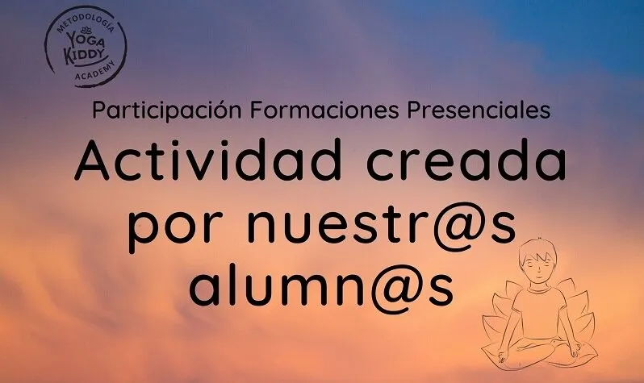

En YogaKiddy dedicamos nuestro esfuerzo a hacer del aprendizaje del Yoga Infantil algo divertido para grandes y chicos, para aprendices e instructores. Así es que en el marco de la última formación para Monitor de Yoga para Niños, en Guadalajara, México, las participantes debieron idear sus propias dinámicas de enseñanza de yoga para niños.
Jugamos a la par del aprendizaje, se pusieron en práctica las herramientas brindadas y sacamos a nuestras niñas internas a pasear en el salón de Yoga.
Aquí les compartimos un corto vídeo de lo que fue la experiencia de un equipo aplicando las técnicas de relajación haciendo volar la imaginación ♥
-¿Listas? Vamos a respirar por nuestra nariz, y vamos a hacer un globo inflenlo muchisisisimo. Lo vana sacar por su boca y se van a desinflar. Van a volver a inflarlo grandote, un poquito más, poquito más. Hasta que casi truene, y luego por su boca… Otra vez inflamos grande grande grande, un poquito más exagerado. Esta vez más más más, pero se van a empezar a desinflar más y se van a hacer aguaditos. Ahora se vana inflar poquito, ya no tanto y dejen salir el aire y se sientan. Poquito más y se van vaciando. Último. Y ya se desinflan por completo. Quedaron super desinflados, el globo más desinflado que han visto en su vida.
Y ahí se van a quedar como globitos desinflados, si paso y toco sus bracitos y sus piernitas no se preocupen, soy su Miss-
-Con los ojos cerrados, ahora de globos van a convertirse en una casa. Visualicen como es su casa. Grandota, chiquita, mediana y vamos a pintar estas casas. Las quieren pintar de alegría, la quieren pintar de amor, de sonrisas, de amigas, de amigos, y vana sentir que va a pasar por sus cuerpos un rodillo que va a pintar sus casas. Con todas las cualidades y los valores, con todas las cosas con las que quieran pintar sus casas. SI tienen mascotas, con sus mascotas. Y vayan relajando todo su cuerpo y sintiendo como su casa se va pintando. Pueden pintar su casa de entusiasmo, de paciencia. Pintar su casa de tolerancia, de cariño. Cuando su casa ya está pintada, sientan con su respiración, todo esto con lo que pintaron su casa y que se impregne por todos los cuartos, por todas las ventanas, por todos los pasillos que decora toda la casa con pintura.
-Seguimos respirando viendo como su casa quedó pintada de tranquilidad, de felicidad, llena de armonía, pero ahora le vamos a poner color. Cada una pongale color a su casa, puede ser uno, dos, tres, hasta cinco colores. Los que ustedes quieran. Una vez que todos pusieron color a su casa, poco a poco vamos a ir abriendo nuestros ojos y nos vamos a ir reincorporando, despacio, pueden ir estirándose. Estiren todo su cuerpo, sus piernas, sus brazos y muy despacio nos sentamos. ¿Cómo se sintieron chicos?
-Bien!
-Ahora, fijense bien, ¿todos vieron su casa? ¿Estaba grande? ¿Chiquita?
-Grandota!
-Muy bien, vamos a describir nuestra casa uno por uno, cada uno me va a decir de que color y tamaño fue su casa, ¿sale? Comenzamos de este lado…
-Mi casa era mediana, de un solo piso y era amarilla con blanco.
-Muy bien
-Mi casa era pequeña y era rosa
-Guau! Que bonita!